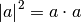
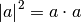
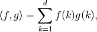
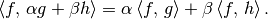
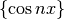

Integration
Let’s define inner products!
In this talk we mainly consider real linear spaces, e.g.,
 . You may consider complex linear spaces if you know
complex numbers.
. You may consider complex linear spaces if you know
complex numbers.
We assume you agree with the existence of higher dimensional spaces. We want to define angles and length of vectors as in two or three dimensional ones. One reason to consider them is application to physics. There is a projection hypothesis in quantum mechanics: this projection comes from orthogonal projection, and it is just a shadow of objects in three dimensional objects when one shine a light from above.
At first we consider how to define angles between infinite dimensional vectors, especially, functions. Take a look at the following inner product formula in high school.
We deform this:
We can derive an angle  from the value of the cosine
function. Lengths [4] of vectors can be computed by inner products,
from . So we can derive angles if we
can define an inner product. Hence we have to define an inner product.
Note that an inner product is not a divine concept.
from the value of the cosine
function. Lengths [4] of vectors can be computed by inner products,
from . So we can derive angles if we
can define an inner product. Hence we have to define an inner product.
Note that an inner product is not a divine concept.
At first we write an inner product in . We write a
vector as  for
later use. This is just a notational convention. We define an inner
product for three dimensional vectors
for
later use. This is just a notational convention. We define an inner
product for three dimensional vectors  and
and  as
as
The first notation is one in high school. The second is usual one when considering a functional inner product. There are several notations for an inner product such as

The last one is the famous Dirac’s braket notation in quantum mechanics.
Inner products in higher dimensional spaces
We wrote an inner product as
Since there is no reason to restrict our consideration to a three
dimensional space we generalize a dimension three to general  .
.

where we set
If you want to consider one in you should set
because it is desirable that a length (norm) of a vector is properly defined, i.e., .
We take a limit . We face a problem whether a series converges or not, but we can overcome this by considering converging ones.
A infinite dimensional vector can be viewed as a sequence. In quantum mechanics we use sequences and matrices living in an infinite dimensional space when considering Heisenberg’s matricial mechanics.
Note that our temporal task is to make how to define an inner product for functions. Let’s go back to a finite sum, think , and rewrite a sum as
Rewrite  as and as .
Then we get a sum
as and as .
Then we get a sum
This is an expression, known as 区分求積法 in high school [5].
Taking a limit the above sum becomes an integral.
Now the interval is ![[0, 1]](_images/math/ab178d831a786b92cb4c9ddc2d33578223036f98.png) here, but we can take any
(measurable) subset of
here, but we can take any
(measurable) subset of  .
.
Hence we find that an inner product for functions can be defined using integral. In fact anything is good if it satisfies the axiom of an inner product.
A linear space with inner product is called pre-Hilbert space. A pre-Hilbert space is called a Hilbert space if it is complete for metric induced by inner product. A Hilbert space is famous as a space where wave functions in quantum mechanics live.
Axiom for inner products
Let  be a linear space and
is a map of two variables. The pair
is an
inner product space if the map
is an inner product,
i.e., it satisfies the following properties.
be a linear space and
is a map of two variables. The pair
is an
inner product space if the map
is an inner product,
i.e., it satisfies the following properties.
Symmetry:
Linearity in the second argument:

Positive definiteness:
The usual three dimensional inner product satisfies the above, of course.
Examples of inner products
There are many inner products in a function space. Let  be
a (open) subset of and
be a function satisfying
be
a (open) subset of and
be a function satisfying
Then the following is becomes an inner product:
We show some examples of inner products.
The above inner products are related to the Legendre polynomials, Laguerre polynomials, Hermite polynomials.
Furthermore we take the following inner product.
Then we get the following expressions.
This means that the functions  and are orthogonal. This relates to the famous Fourier series expansion. This is used for wave analysis in physics.
Physics for the space 
The symbol in the title means the space
of square integrable functions in the sense of Lebesgue on
.
We introduce a physical meaning of the space
. [6]
The elements of the space have finite
energy. Let us consider a wave equation.
The energy for its solution is written by
We want to restrict solutions whose energy is finite since it is physically meaningless to consider infinite energy solutions. The elements of have finite energy, by definition, and hence it is the reason why the space is important in physics. To be precise our derived functions are in , so we have to consider a Sobolev space .
In quantum mechanics probabilistic interpretation forces us to consider functions in . Furthermore we have to impose more severe restriction to functions, i.e., the domain of Hamiltonians.
Linear operators have their domains and, for Hamiltonians, their domains are functions having finite energy.
| [4] | In general we call it a norm of a vector. We can consider many norms for a vector since there are many senses of distances. |
| [5] | This is a definition of the Riemann integral. |
| [6] | To be precise the proper space is not but . |